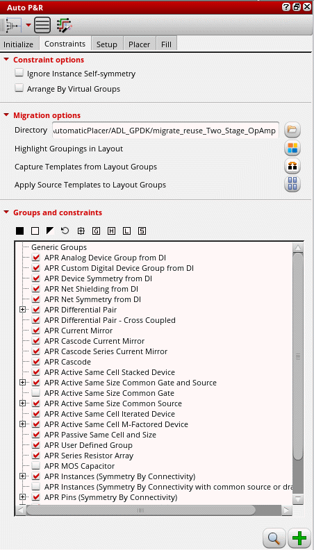
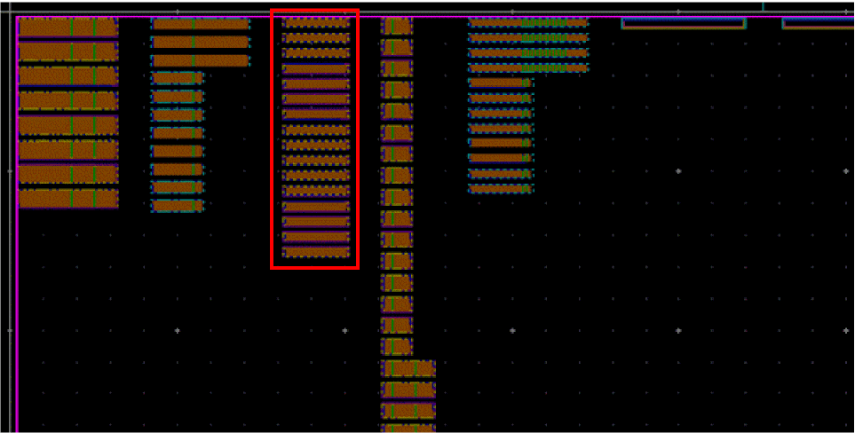
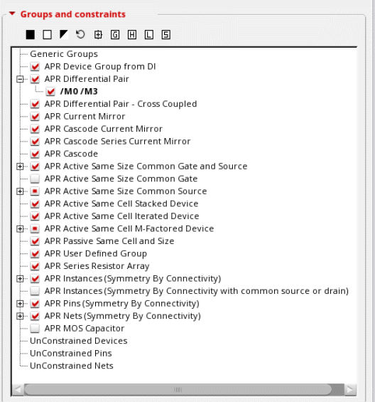
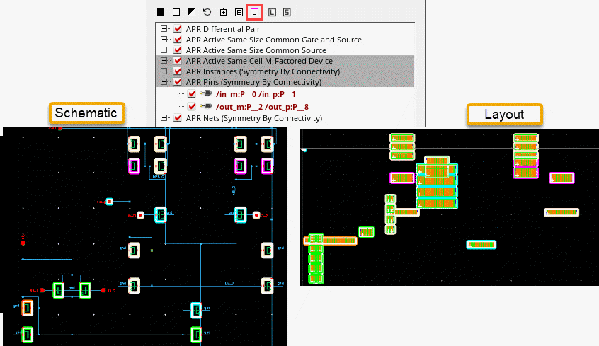
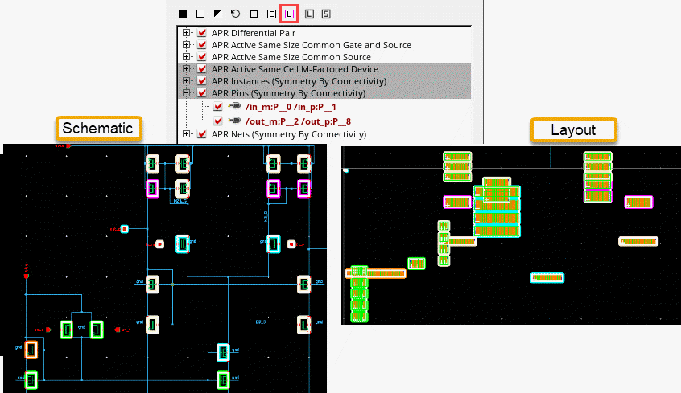

Generating Constraints and Constraint Groups
-
Open the Constraints tab of the Auto P&R assistant.
 -
Select Ignore Instance Self-symmetry to specify that instance self-symmetry constraints are to be ignored.
Select this option to restrict propagation of self-symmetry of multiple grouped instances into a single symmetry constraint. This may be undesired when a compact placement is needed. -
Select Arrange by Virtual Groups to display a preview of the virtual groups before running the placer. Devices are arranged vertically according to their virtual group, as shown below:
 -
In the Groups and constraints pane, select the circuit finders to be run to identify matching devices and device groups in the design.
By default, all applicable circuit finders are selected. Deselect the ones that you do not want to run. You can also use the selection options . Click to restore default settings.
For example, if a device pair is listed under two different constraint groups, you can select the device group for which they need to be included. -
Click the find icon to search for all matching structures in the source cellview following the order in which they are listed. The ciRunFinder SKILL API is run with
hierScopeset toallCellViews. The finder searches for matching structures across all levels of the hierarchy.
All structures and device groups found are listed under their respective categories in the Groups and Constraints pane.
 - Click to expand each group to view matching device groups. Alternatively, use the icon above the table to expand all constraint group trees.
-
(Optional) Edit the device groups as per your requirements using the following options in the shortcut menu:
- Zoom: Magnifies the selected device group in the layout canvas.
- Pan: Pans the selected device group.
- Fix Group: Adds a property to device groups so that they cannot be moved by the placer.
- Edit Group: Invokes the Array Assistant to edit the design array constraint.
- Delete Constraint: Deletes the device group.
-
Select the device groups for which constraints are to be created.
-
Use
 to select all constant groups.
to select all constant groups. - Use to expand all constraint trees.
- Use to hide unused, empty constraint groups.
- Use to highlight all instances of the selected constraint groups in the layout and schematic views. Each constraint group is highlighted in a different color.
-
Use
 to load the constraint order from a preset file.
to load the constraint order from a preset file. -
Use
 to save the constraint order to a preset file.
to save the constraint order to a preset file.
-
Use
- Click Create Constraints.
New topological constraints corresponding to the matching devices groups are generated.
All identified structures are organized in Modgens along with symmetry information for symmetric structures. They are also listed in the Constraint Manager.
The device groups for which constraints are created are highlighted in red.
The Unconstrained Devices, Unconstrained Nets, and Unconstrained Pins categories in Groups and Constraints pane list all unconstrained devices, nets, and pins in the layout. You can select the required devices and create groups or symmetry constraints on them by using the options in the shortcut menu.
Related Topics
Constraints in the Automated Device Placement and Routing Flow
Editing a Modgen in the Automated Device Placement and Routing Flow
Return to top